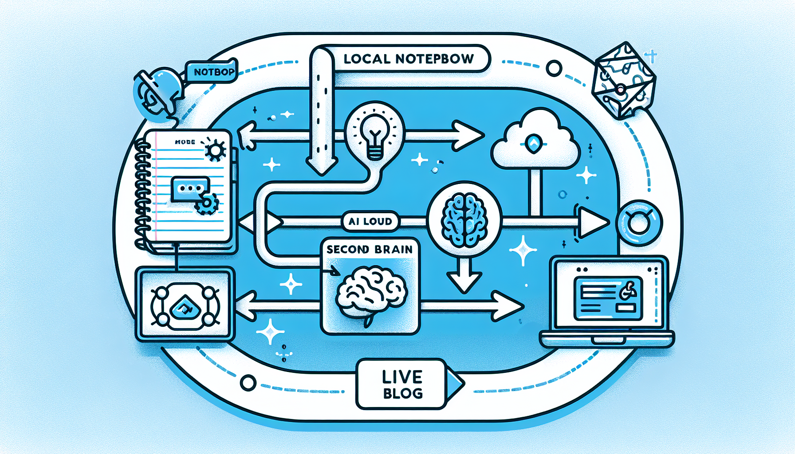

The Publishing Pipeline
This post demonstrates the end-to-end workflow I use to publish content from my local Obsidian vault to my live blog at hello.rifaterdemsahin.com. The pipeline connects my Second Brain, AI image generation via fal.ai, and GitHub for seamless deployment.
Step-by-Step Process
1. Write in Obsidian
Everything starts in my local Obsidian vault. I write drafts using Markdown, add tags, and organize notes using the PARA method (Projects, Areas, Resources, Archive). The vault lives inside my Second Brain repository, which syncs to GitHub.
2. Second Brain Processing
The Second Brain acts as the central hub. It contains:
- Scripts that transform Markdown into structured HTML
- Templates for consistent blog post formatting
- Asset pipelines for image optimization and tagging
- SEO metadata generation for every post
3. AI Image Generation with fal.ai
For every post, I generate a custom header image using fal.ai. The workflow sends a prompt describing the post topic to fal.ai, which returns a high-quality image. This image is saved locally and then pushed alongside the post content. The diagram above was generated using DALL-E to illustrate this exact pipeline.
4. GitHub Commit
Once the content and assets are ready, the skill pushes everything to the rifaterdemsahin/web repository:
- HTML post file goes to
YYYY/MM/DD/slug/index.html - Images go to
YYYY/MM/DD/slug/images/ - Commit message includes the post title
5. Live Deployment
GitHub Pages (or the existing static hosting) serves the content immediately after the commit. The post becomes available at:
https://hello.rifaterdemsahin.com/YYYY/MM/DD/slug/
Why This Matters
This pipeline removes friction from publishing. I never leave my Obsidian environment, yet every post gets professional formatting, AI-generated imagery, and instant deployment. It is a practical application of the Second Brain philosophy: capture once, reuse everywhere.
Tools in the Stack
| Tool | Purpose |
|---|---|
| Obsidian | Local Markdown writing |
| Second Brain | Content processing & templating |
| fal.ai | AI image generation |
| GitHub | Version control & hosting |
| GitHub Pages | Static site delivery |
Imported from rifaterdemsahin.com · 2026